문이 열린 지 10년
서울 한복판 하늘에는 10년째 닫히지 않는 문이 걸려 있다. 사람들은 아침마다 날씨 대신 밤사이 열린 문 지도를 보고, 그 문을 그냥 올려다보며 출근한다.
게이트
허공에 푸른 금이 그어지고, 1~3초 뒤 금이 벌어져 문이 된다. 국가게이트관리국(국관)이 1시간 안에 F~S 등급을 판정하고, 7일 안에 던전 보스를 쓰러뜨리거나 코어를 부수지 못하면 브레이크 — 몬스터가 밖으로 쏟아진다.
| 등급 | 비율 | 층 | 문의 색 |
|---|---|---|---|
| F~E | 65% | 1~2 | 연한 하늘색 |
| D~C | 28% | 2~4 | 짙은 남색 |
| B~A | 6.8% | 4~9 | 청보라 · 보라 |
| S | 0.2% | 10+ | 검은 테에 흰 속 |
그리고 2016년부터 한 번도 닫힌 적 없는 문, 등급 측정 불가의 제로 게이트.
각성과 인장
게이트 기운에 노출된 뒤 능력이 깨어나면 손목 안쪽에 인장이 떠오른다. 인장의 모양이 계열을 말한다. 각성자는 인구의 0.3%, 등급은 E~S, 그리고 판독 불가 EX.
"판독기는 거짓말을 안 해. 측정 불가가 뜨면, 그건 판독기가 모르는 거야."
잔향 — 힘의 대가
능력을 쓸수록 몸에 게이트의 기운이 쌓인다. 0~100으로 재고, 하루 5씩 빠진다. 빨리 빼는 정화 시술은 1회 300만 원.
- 60+ 인장이 붉어지고 두통·환청 — 은어로 '붉은손'
- 80+ 역류(폭주). 인장이 검게 번진다
- 100 게이트화 — 사람이 작은 게이트가 된다. 공식 기록 3건
히어로와 헌터
| 히어로(공무) | 헌터(민간) | |
|---|---|---|
| 자격 | 한빛 졸업·국관 특채 + 라이선스 1~5급 | 길드 가입 + 헌터 등록 |
| 수입 | 연봉 + 출동 수당 | 입찰 공략 수익, 방송·광고 |
| 의무 | 출동 명령 거부 불가 | 없음(보험도 없음) |
| 이미지 | 국민의 영웅, 공무원 | 연예인·스트리머, 돈 |
세력
- 국가게이트관리국(국관) — 본부는 광화문 지하 '광화문 언더'. 국장은 비각성자 첫 국장 강서준. 안에서도 "막는 게 일"이라는 쪽과 "게이트는 자원"이라는 쪽이 부딪친다.
- 헌터 협회 · 5대 길드 — 플레임 · 백호 · 아르고 · 은하 · 묵. 국관 입찰로 공략권을 따 마석으로 번다.
- 태성 그룹 — 마석 발전과 장비를 쥔 재벌. 한빛의 최대 후원사.
- 열린문 — 게이트를 '구원으로 가는 문'이라 믿는 교단. 수장은 얼굴 없는 목소리 '문지기'.
2026년의 일상
- 문알림 — 국관 앱 푸시. [청] 마포구 망원동 F급 개방 · 반경 200m 우회
- 마석 — 국내 전력의 31%. 게이트가 줄면 전기요금이 오른다.
- 문숨 — 밤 11시 무렵 한강 쪽 하늘이 희미하게 밝아졌다 어두워진다. 10년째 매일 밤.
- 은어 — 문따기(공략) · 붉은손 · 검은손 · 맹물 · 7초 세대 · 0찍
10년의 기록
이 세계 사람이라면 누구나 아는 일들. 2026년 가을의 기록은 국관이 기밀로 묶어 두었다.
대균열
퇴근길 한강 위 하늘에 첫 게이트 '제로 게이트'가 열렸다. 하늘이 7초 동안 하얗게 변했다 — 백야 7초. 사망·실종 1만 2천 명.
[속보] 한강 위 하늘에 '문'… 7초간 하얗게자경단 시대
전국에 작은 게이트 수백 개. 첫 각성자가 된 10대들이 밤거리를 지켰다. 훗날 '7초 세대'라 불린다.
S급 여명, 2차 범람 저지
제로 게이트의 두 번째 범람을 혼자 막아 낸 흰 코트의 히어로. 국민 영웅이 됐다.
"무서우면 내 등만 봐. 7초면 끝나."국가게이트관리국 설립
각성자관리법 시행. 국가 공인 '히어로'와 민간 '헌터'가 나뉘었다. 히어로 라이선스 1번은 여명.
제로존 봉쇄
제로 게이트 반경 3km 봉쇄. 같은 해 부산 흑색 게이트에서 사흘 만에 돌아온 팀이 말했다. "안에서 2년을 지냈다."
5대 길드 체제
길드 허가제·헌터 랭킹·게이트 입찰제. 플레임·백호·아르고·은하·묵.
국립 히어로 아카데미 한빛 개교
인천 앞바다 인공섬 한빛도. 만 19세 이상 각성자의 3년제 대학 과정. 10대의 '꿈의 학교'.
홍대 사건
교단 열린문이 처음으로 게이트를 '인위로' 열었다. 같은 해, 비각성자 강서준이 국관 국장이 됐다.
여명 은퇴
기자회견도 없이 국관 보도자료 세 줄. 이유는 공개되지 않았다.
게이트, 처음으로 늘다
개방 수가 전년보다 18% 늘었다. 익명 커뮤니티 '문갤'에 괴담이 돈다. "10주기에 큰 게 온다."
밈: "11월 12일엔 휴가 써라"한빛 입학식 이야기 시작
인장 측정장. 판독기에 뜬 숫자 하나 — "잔향 0. 측정 불가." 당신은 꼴찌 반, 1학년 6반에 배정된다.
서울시장 선거
'제로존 단계 해제·한강 재생'을 내건 후보가 당선됐다.
성수동 B급 게이트 브레이크 같은 해, 다른 이야기 · 준비 중
공략이 늦어진 게이트에서 몬스터가 쏟아졌다. 사망 9명. 길드 책임론.
국관 신입 720명 특채 같은 해, 다른 이야기 · 준비 중
평년의 2.4배. 왜 올해만 이렇게 많이 뽑았는지는 아무도 말하지 않는다.
국관 기밀
국관 기밀
국관 기밀
?
10년 전, 그 시각.
장소
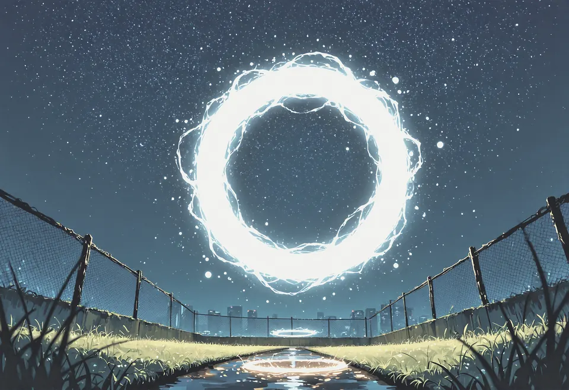
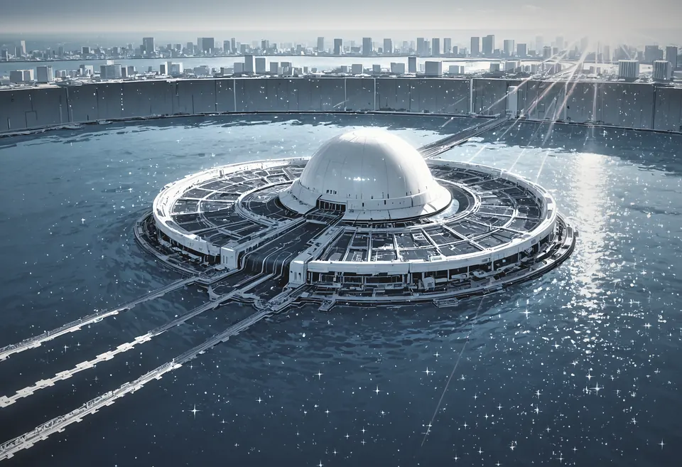
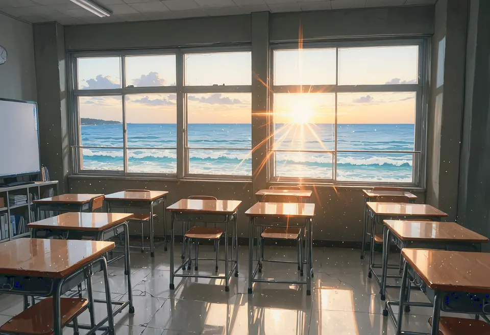
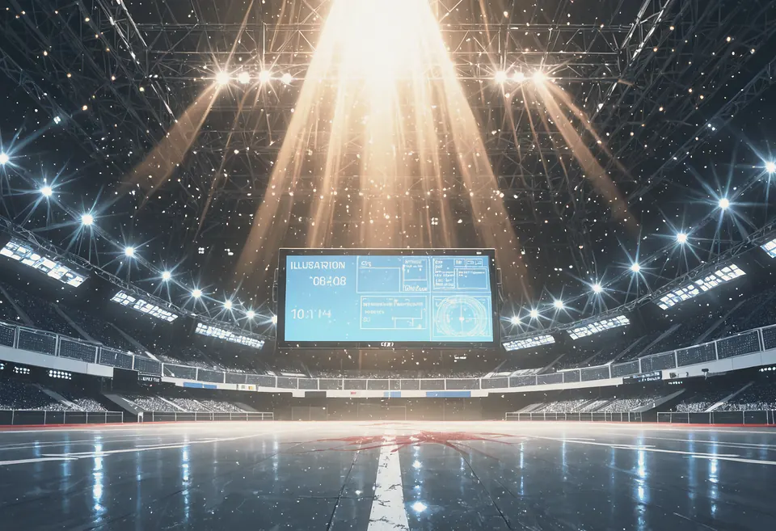
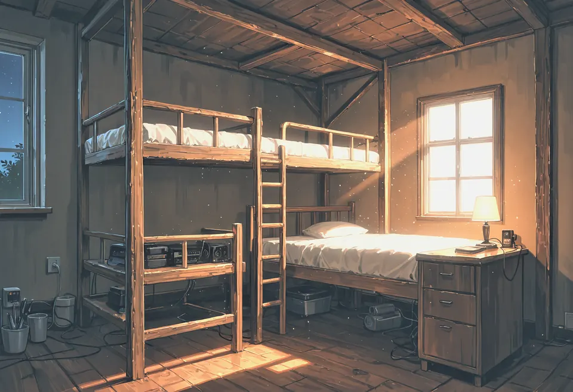
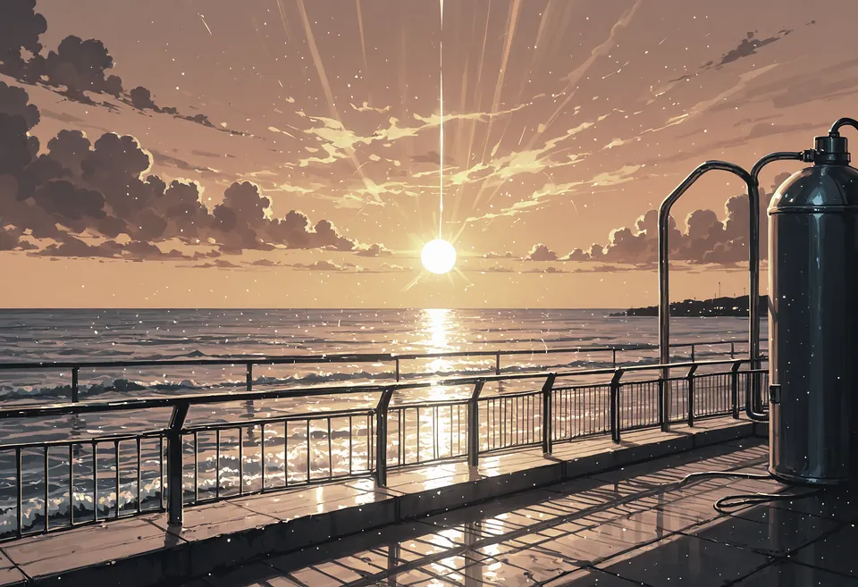
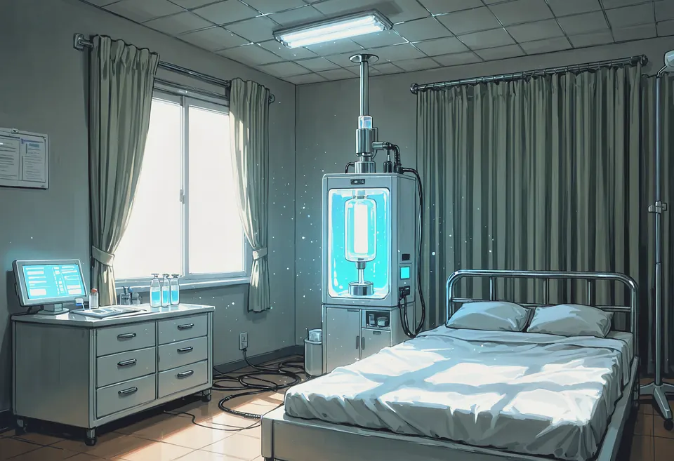
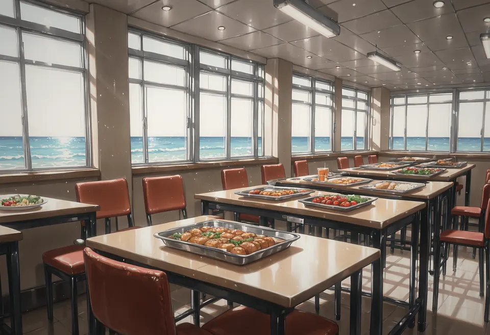
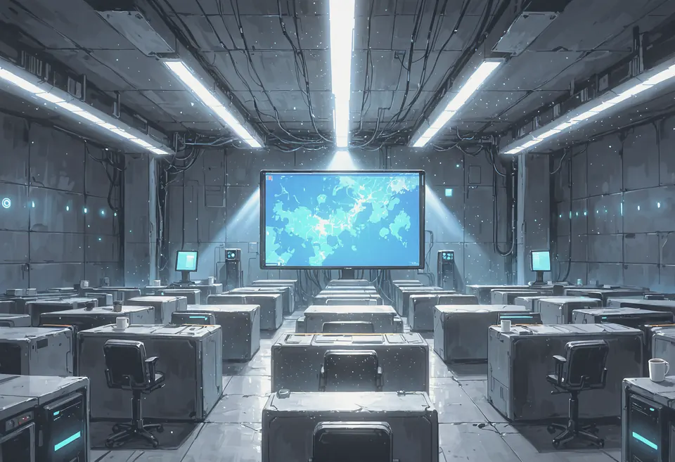
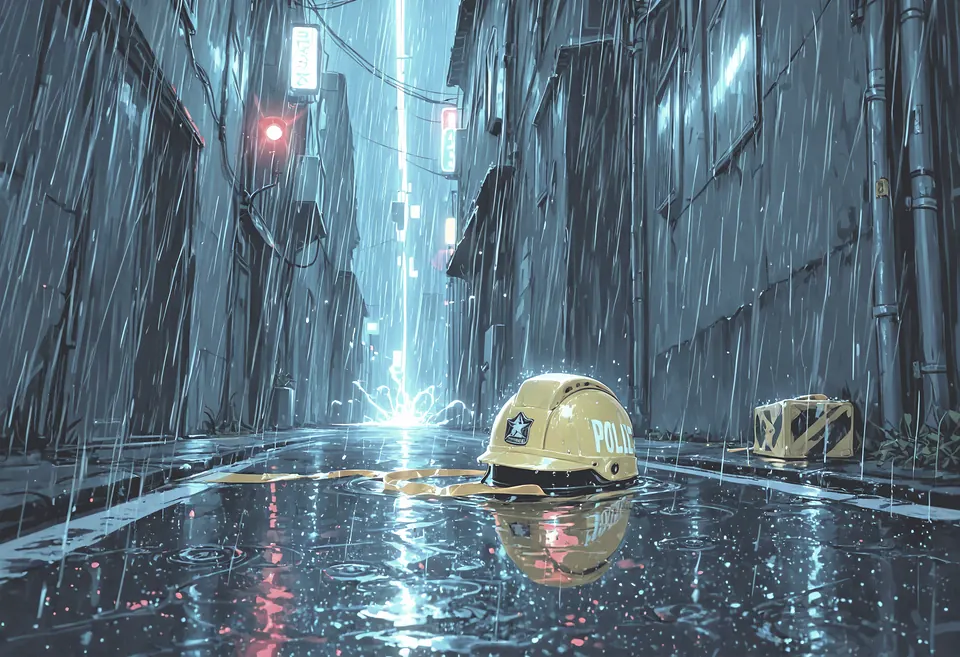
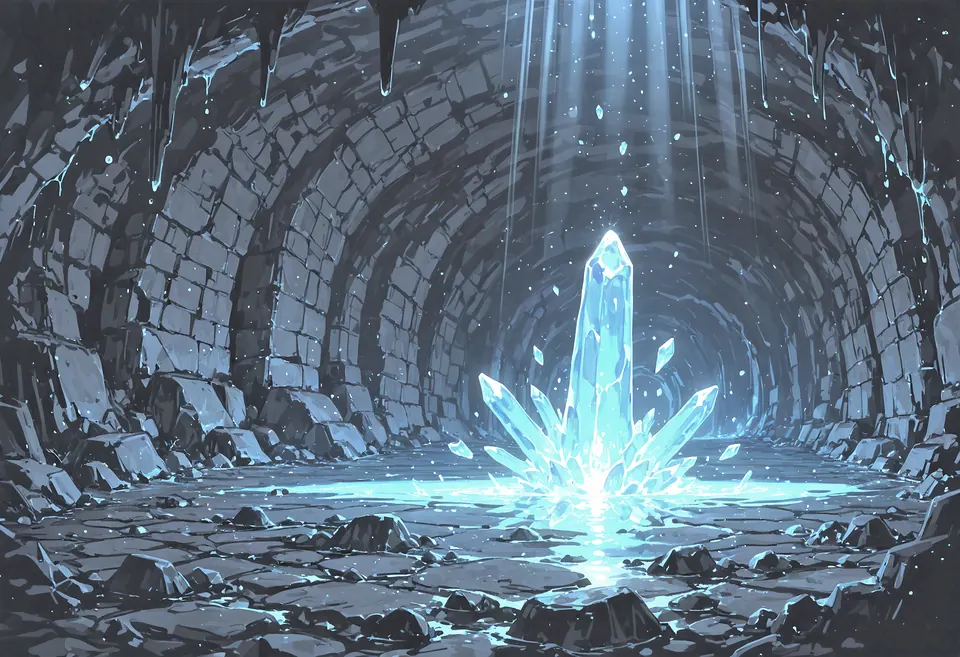
등장인물
등장인물은 전원 성인입니다. 잔향, 능력의 비밀, 숨은 사정은 플레이하며 알게 됩니다.
시작 설정
입학식 보통
3월 2일 인장 측정장. "잔향 0. 측정 불가." 배정된 곳은 문제아만 모인 1학년 6반. 대범람까지 D-255.
승강 시험 전날 어려움
7월 13일 밤. 6반은 랭킹 포인트 꼴찌, 내일은 1학기 승강 시험. 반장 서하늘의 잔향은 이미 87.
자유 설정
등급·계열·반·시작 시점을 직접 정한다.